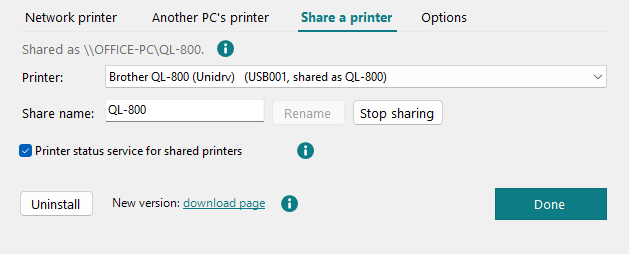

Printer setup
Here you add QL printers on the network and printers of another PC, share this PC's QL printer and turn on the driver log. A USB printer needs none of this to print: the install sets it up by itself.
-
Open it
Printer > Printer setup (also in QL Label Maker), a click on "QL Unidrv … · … QL printers" at the left of the status bar, or in Windows Installed apps > QL Unidrv printer driver > Modify. At the top is the list of QL printers on this PC; a shared printer shows its share name. A printer of another PC says "no longer shared" when that PC stopped sharing it (or renamed the share), and "not reachable" when that PC doesn't answer: print jobs then don't arrive. Remove it here, and add it again with the new name if needed. For the selected printer: Remove printer (asks first; the driver stays installed) and Printer properties (Windows' own window: ports and more; also by double-click). A QL printer connected by USB that has no printer here (for example after Remove printer: Windows doesn't add it again by itself) gets a line below the list with Add printer; with several such printers the line counts them and the button lets you choose one. The line follows when a printer is plugged in or unplugged while the window is open. The new printer isn't shared; the window then offers Share printer. A shared printer may stay open on PCs that print to it: then Windows finishes removing it only after the service Print Spooler on that PC, or one of the two PCs, restarts; the window says so.
Below the list are four tabs; the window opens on the one used last. Ctrl+Tab switches between them.

-
Network printer
For QL printers with Ethernet or Wi-Fi: type the IP address. It is on the configuration label the printer prints, or in its network settings. Leave Model at (ask the printer): the printer tells its model itself; only if it doesn't answer, choose it. Then Add.
The window shows what will be added, with the model and the loaded roll; Add printer asks once for administrator permission. Afterwards it offers Print test label, Open print queue and Set as default printer. Every PC adds a network printer by its address like this; it isn't shared through a PC.
-
Another PC's printer
A USB printer on another PC can be used through a share. First, on the other PC: share the printer (Share a printer). Then on this PC open
\other-PC-nameonce in Explorer and sign in with "Remember my credentials".Then type
\PC\share nameunder Share here, choose the Model and click Add. If the share is named after the model (\PC\QL-800), it is already chosen. -
Share a printer
Here other PCs get a QL printer that is connected to this PC by USB. Choose the Printer, keep the suggested Share name (the model, for example
QL-800) or type another, and click Share printer. A share name has at most 80 characters, none of" / \ [ ] : | < > + = ; , ? *, and no other share on this PC may use it; the window says so while you type. Afterwards it shows the address for the other PCs, for example\THIS-PC\QL-800.For a shared printer, Rename changes the share name and Stop sharing ends it. Both ask first: PCs that print through the old name no longer reach the printer and must add it again. Each change asks once for administrator permission.
Other PCs reach the share only when Windows' file and printer sharing is on and the network isn't set to public. Otherwise the tab says so, with Open settings.
- Printer status service for shared printers
- A Windows service asks this PC's printers every 3 seconds, so the PCs that print through a share see the roll and errors too, and can print test labels. Printing works without it.
Network printers aren't shared here: every PC adds them by their address.
-
Options
- Driver log for troubleshooting
- records what the driver does for every print
(
C:\ProgramData\QLUnidrv\log\plugin.log). Turn it on only for a bug report, then off again. Asks once for administrator permission.